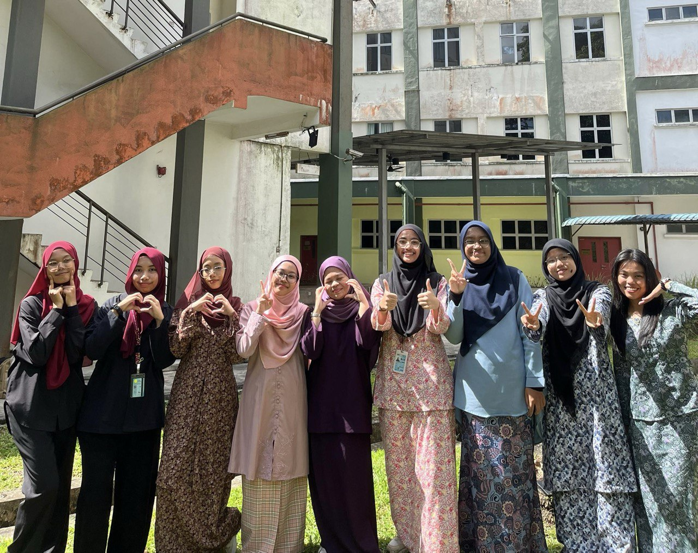
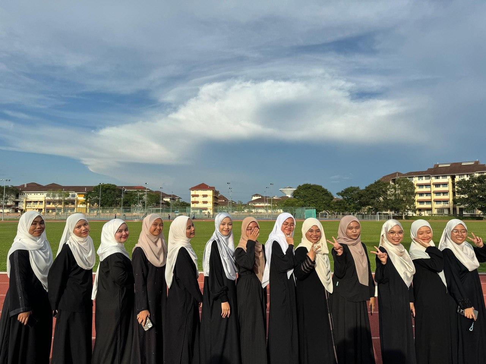
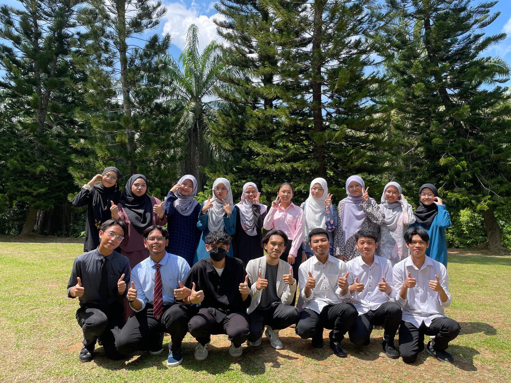
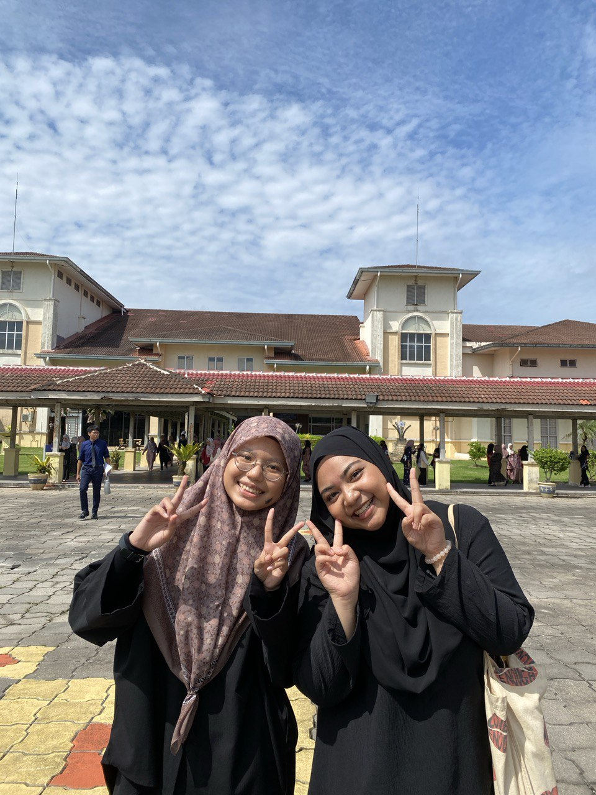
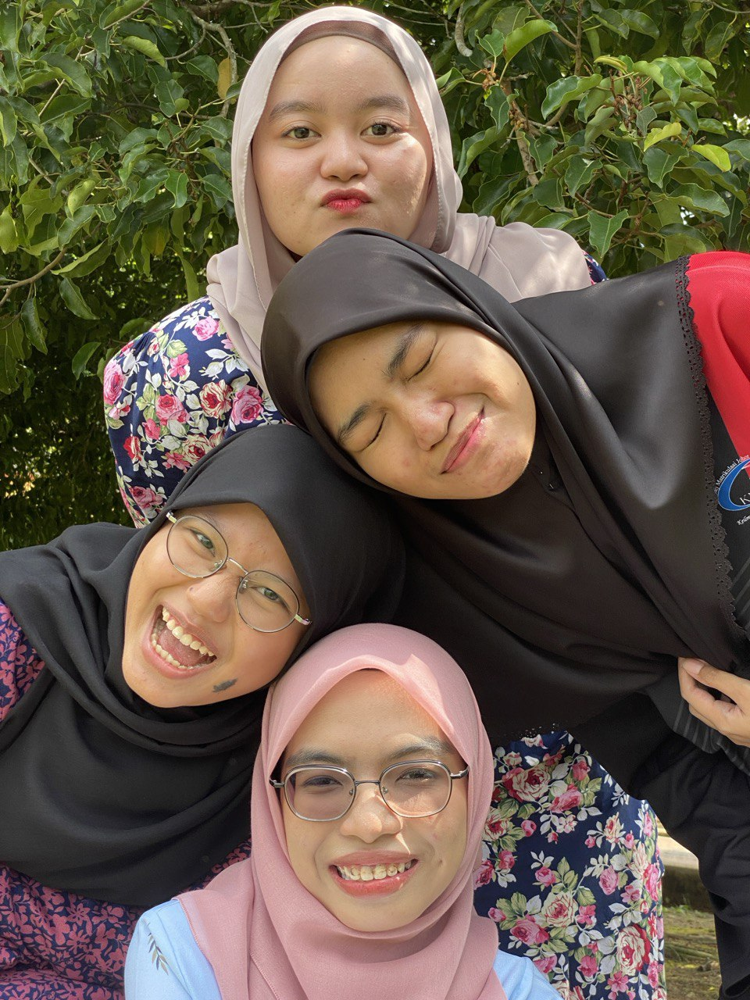
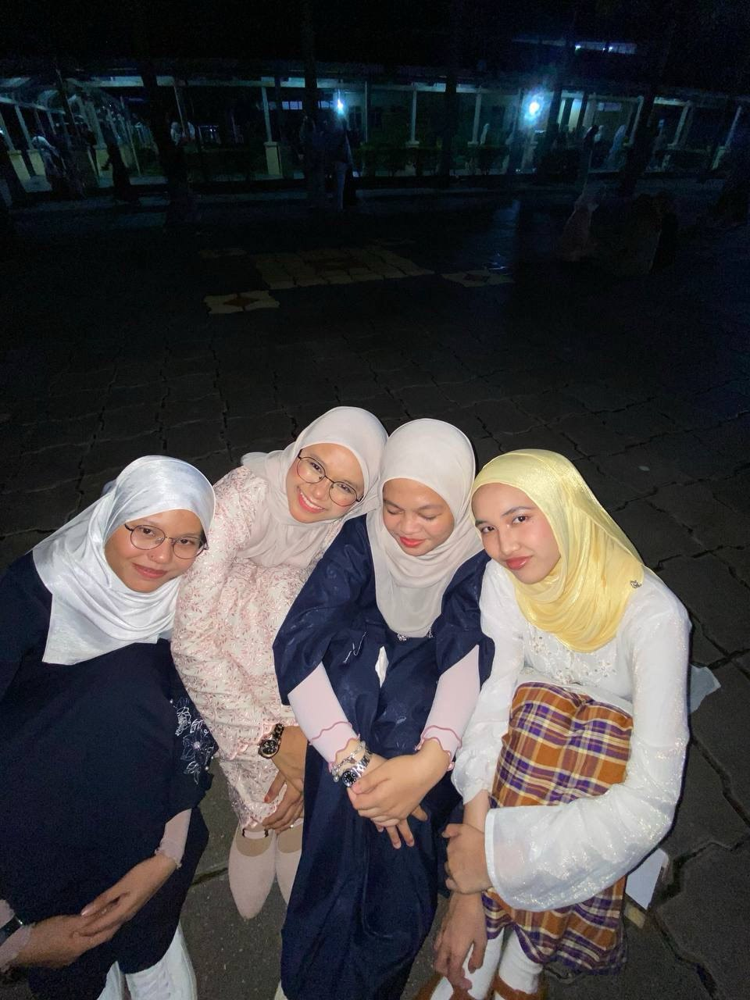

Education Background
Universiti Teknologi Malaysia (2024)
Degree in Computer Science (Data Engineering)
Relevant Coursework: Discrete Structure, Digital Logic, Technology Information & System, Programming Technique



Kolej Matrikulasi Johor
Pre-university in Physical Science
Relevant Coursework: Mathematics, Physics, Chemistry and Computer Science.






Position
Peer Assistance Learning (PAL) Leader - Guided and supported fellow students in understanding complex topics in Physics and Mathematics through collaborative learning sessions.
Executive Member of the Student Council, Pusat Islam Matrikulasi as the Vice Head, Academic and Cleanliness - Led academic and cleanliness initiatives for student community.
President of English Club - Conduct engaging activities for members to enhance their language skills, such as debates and public speaking. Also, serve as the Head of Media for the club, managing its communication to other students.
Skills & Achievements
Leadership & Teamwork: Developed strong leadership and teamwork skills as an executive member of the student council and President of the English Club, collaborating with peers to achieve common goals.
Communication Skills: Effective at both verbal and written communication, gained through organizing debates, public speaking events, and club activities.
Problem-Solving & Analytical Thinking: Sharpened problem-solving abilities through guiding peers in understanding complex academic subjects like Physics and Mathematics.